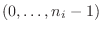
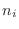
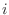

Next: Merge Up: Tensor operations Previous: outer product Contents
The meld operation merges the hypercubes of its input tensors. The value at a given hypercube value is given by the value of the first tensor that has a value defined at that hypercube point. So ordering of input tensors does matter where the data is inconsistent between input tensors.
For example, consider the following inputs and x-vectors:
then the resultant output has x-vector  and the values are  if 1 is connected to port 1 and 2 connected to port 2. If they were connected the other way around, the the values would be .